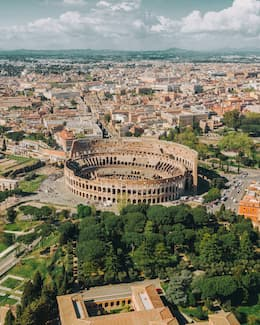
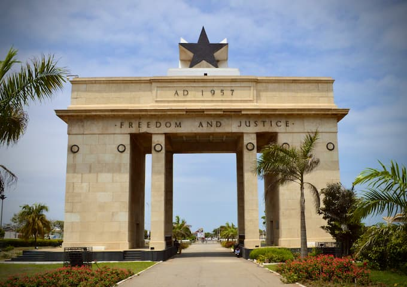
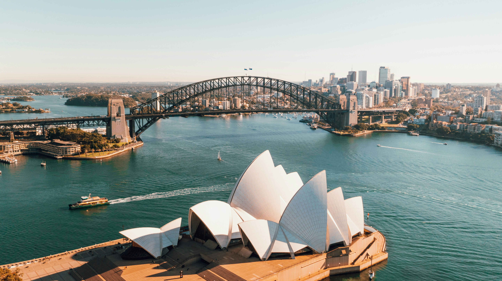
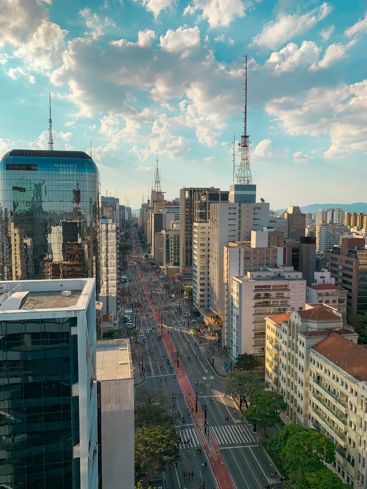

Temple Album
Home
Old
New
Large
Small
Home
Salt Lake Temple

Rome Italy Temple
Tokyo Japan Temple
Johannesburg South Africa Temple

Accra Ghana Temple

Sydney Australia Temple
Paris France Temple

Sao Paulo Brazil Temple
Aba Nigeria Temple